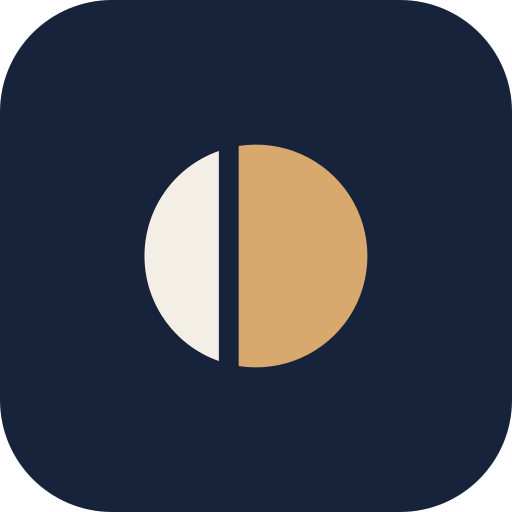

symbol.svg · 원 하나(중심 12, r9)를 x=9.0 / 10.6에서 갈라 왼쪽 잉크, 오른쪽 앰버

app-icon.svg · 잉크 타일, 심볼 58%
대담
대담
헤더 22 · 랜딩 26, 간격 10, Pretendard 700 -.02em
파비콘 16 · 12
대담
무대 위 — symbol-on-dark.svg (종이 #F4EFE6 + 앰버 #D9A86C)
symbol-mono.svg · currentColor (인쇄·단색)